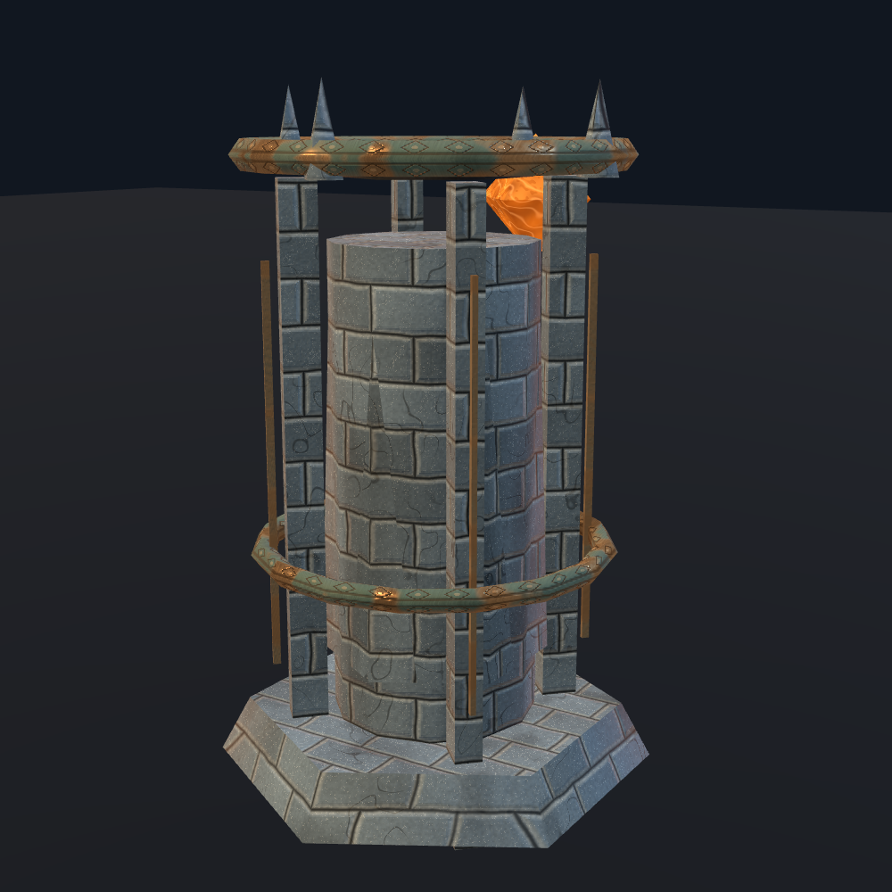
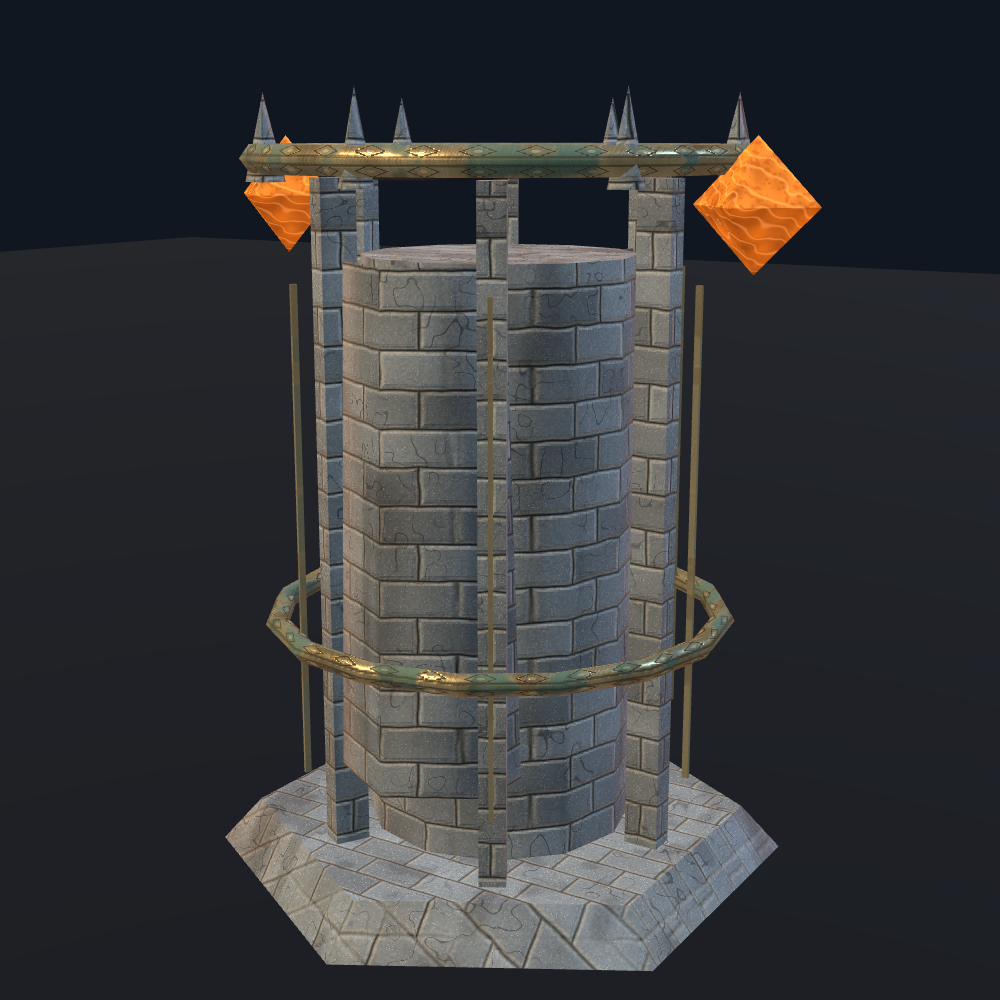
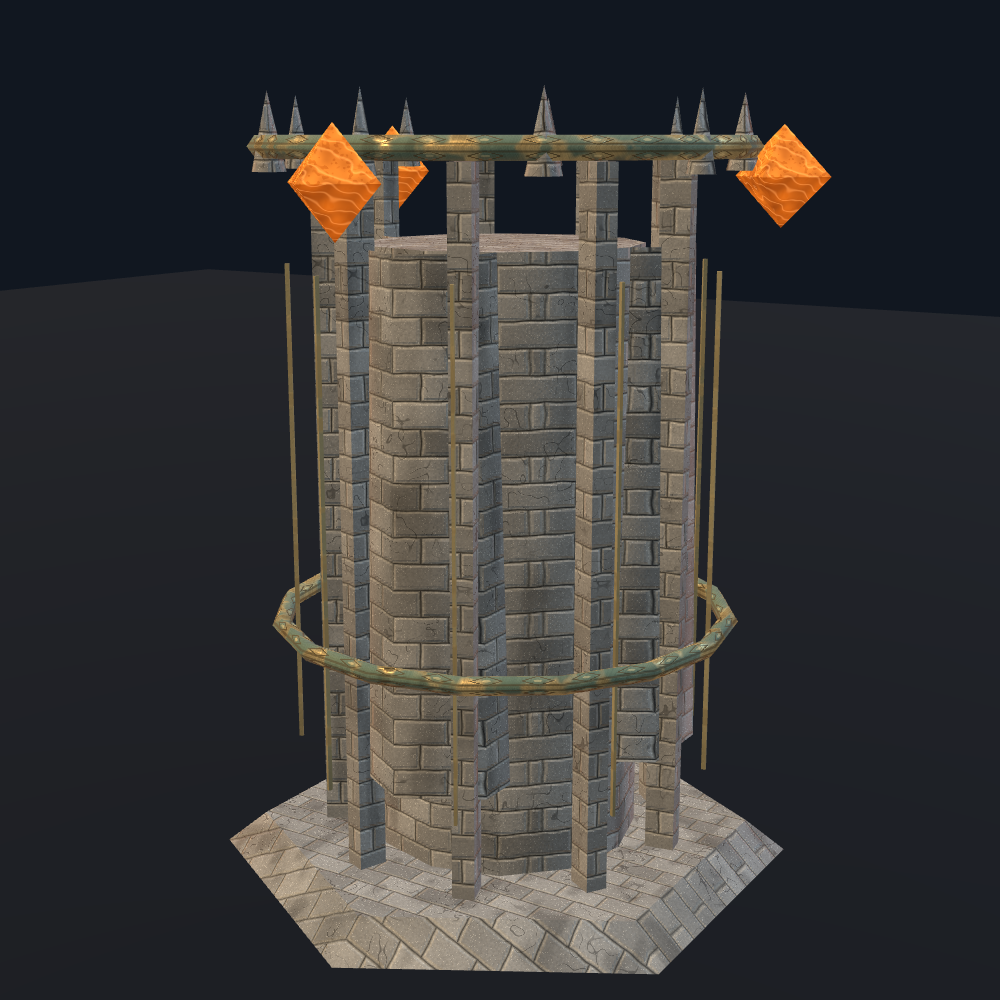

RIFT OBELISK
Charcoal basalt / aged copper

TWIN FOUNDRY
Iron slate / oxidized brass

CROWN CITADEL
Warm basalt / engraved gold

Charcoal basalt / aged copper

Iron slate / oxidized brass

Warm basalt / engraved gold